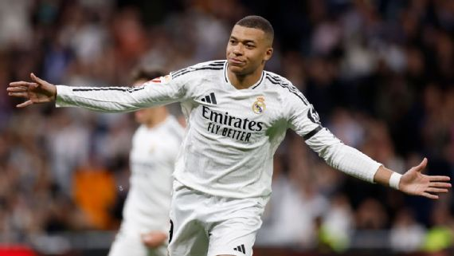
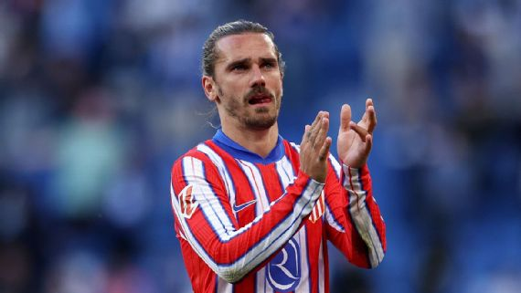

Como cada jornada, nuestros corresponsales en España dan un repaso a lo más destacado de la jornada de LaLiga; esta vez es el turno de la fecha 29.
La recta final de la temporada 2024-25 de LaLiga de España ha iniciado. A falta de un partido este lunes (Celta Vigo vs. Las Palmas), la Jornada 29 ha terminado y ha dejado puntos muy destacados.
El Barcelona sacó un triunfo importante por goleada frente al Girona que le permite mantenerse en lo más alto de la tabla de posiciones y con la ilusión intacta. Por su parte, su inmediato perseguidor, el Real Madrid, derrotó al Leganés en un partido muy apretado.
Además, el Atlético Madrid dejó escapar unidades claves frente al Espanyol, por lo que parece que el equipo de Simeone se bajó de la carrera por la corona.
Como en cada jornada, nuestros corresponsales en España repasan lo más destacado de la fecha. Llegó el turno de analizar el capítulo 29 del campeonato español. Aquí vamos.

Protagonista: Antoine Griezmann
Antoine Griezmann no pudo celebrar el sábado como habría deseado un récord descomunal: ante el Espanyol disputó su partido número 521 en LaLiga, convirtiéndose en el futbolista extranjero con más presencias en la Primera División española y superando los 520 encuentros que sumó Lionel Messi.

El enganche francés, que recientemente cumplió 34 años, debutó con la Real Sociedad en 2ª División en la temporada 2009-10 y, logrado el ascenso, se estrenó en la máxima categoría el 29 de agosto de 2010 ante el Villarreal.
En total disputó 141 partidos con el cuadro vasco hasta 2014, 74 con el Barcelona entre 2019 y 2021 y acumula 306 con el Atlético de Madrid en dos etapas, siendo además el octavo jugador con más partidos oficiales (431) en la historia del club colchonero.
Los 5 maximos goleadores de la liga
| Equipo | Goles Bruto |
| lewandowski | 25 goles |
| Mbappe | 22 goles |
| Ante Budimir | 15 goles |
| Raphinha | 13 goles |
| Oihan Sancet | 13 goles |